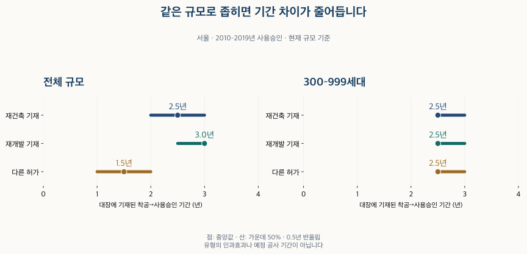

정비사업 숫자 읽기
재건축·재개발 공사 기간, 단지 규모를 맞추면 달라질까?
건축물대장의 착공일부터 사용승인일까지를 서울·경기와 승인 연대별로 비교했습니다. 같은 300~999세대로 좁히면 달라지는 기간, 최근 연대의 빈칸과 해석 한계를 확인합니다.
분석 기간 · 2010–2019년·2020–2025년 사용승인 | 자료 기준일 · 2026-10-04
재건축·재개발 아파트는 공사도 더 오래 걸릴까요? 전체 단지를 섞은 비교에서는 차이가 보이지만, 같은 규모로 좁히면 차이가 줄어드는 구간이 있습니다. 서울의 2010년대 승인 단지 중 300~999세대에서는 세 허가 집합의 중앙 기간이 모두 약 2.5년으로 표시됩니다. 이 글은 건축물대장에 기록된 착공일부터 사용승인일까지를 비교합니다.
착공부터 사용승인까지는 무엇을 뜻하나요?
이 글은 국토교통부 건축HUB 건축물대장정보의 착공일·사용승인일을 사용합니다. 현재 단지 정보의 준공연도와 승인연도가 같은 주거용 주건축물 가운데, 같은 물리 건물이 여러 단지에 겹쳐 연결된 기록을 제외했습니다. 그 조건에 남은 동들의 가장 이른 착공일부터 가장 늦은 사용승인일까지를 셉니다.
남은 동에 착공일이 빠졌거나 승인일보다 늦은 기록이 있으면 그 단지의 기간을 계산하지 않았습니다. 여러 동의 일부 날짜만 골라 짧은 기간을 만들지 않기 위해서입니다. 다만 준공연도가 다른 동이나 제외된 건물까지 포함한 단지 전체의 역사, 여러 공구의 모든 일정을 복원한 것은 아닙니다.
구역 지정·조합 설립·이주·철거는 별도의 사건입니다. 실제 입주가 시작된 날도 사용승인일과 동일하다고 놓지 않았습니다. 서울 정비사업의 현재 단계 자료와 이 기간표를 연결해 지정부터 입주까지를 계산하지 않는 이유입니다.
허가 구분에 재건축 협의·시행인가가 남은 단지, 재개발·도시환경 협의·시행인가가 남은 단지를 구별했습니다. 이 명칭 분류에는 소규모 재건축 협의 기재도 들어가며, 법률상 일반 재건축만을 따로 모은 집합은 아닙니다. ‘다른 허가 기재’는 그 밖의 허가 구분이 있는 단지입니다. 이 집합을 전부 비정비사업이나 택지 신축이라고 부를 수 없습니다. 과거 정비사업이 다른 구분으로 기재됐을 가능성과 미기재가 있기 때문입니다.
전체 규모를 섞으면 기간은 얼마나 다른가요?
승인 연대를 2010~2019년과 2020~2025년으로 나눴습니다. 2026년은 아직 끝나지 않아 제외했습니다. 서울 25개 구와 수집한 경기 36개 지역을 각각 비교하며, 경기도 전체 사업을 빠짐없이 센 통계는 아닙니다.
| 지역·승인 연대 | 허가 구분 | 중앙값 | 가운데 50% |
|---|---|---|---|
| 서울 · 2010–2019 | 재건축 허가 기재 | 2.5년 | 2.0–3.0년 |
| 서울 · 2010–2019 | 재개발 허가 기재 | 3.0년 | 2.5–3.0년 |
| 서울 · 2010–2019 | 다른 허가 기재 | 1.5년 | 1.0–2.0년 |
| 서울 · 2020–2025 | 재건축 허가 기재 | 2.5년 | 2.0–3.0년 |
| 서울 · 2020–2025 | 재개발 허가 기재 | 3.5년 | 3.0–4.0년 |
| 서울 · 2020–2025 | 다른 허가 기재 | 1.5년 | 1.0–2.5년 |
| 수집 경기 · 2010–2019 | 재건축 허가 기재 | 2.5년 | 2.5–3.5년 |
| 수집 경기 · 2010–2019 | 재개발 허가 기재 | 자료 부족 | 자료 부족 |
| 수집 경기 · 2010–2019 | 다른 허가 기재 | 2.0년 | 1.0–2.5년 |
| 수집 경기 · 2020–2025 | 재건축 허가 기재 | 2.5년 | 2.0–3.0년 |
| 수집 경기 · 2020–2025 | 재개발 허가 기재 | 3.0년 | 3.0–4.0년 |
| 수집 경기 · 2020–2025 | 다른 허가 기재 | 2.5년 | 1.5–3.0년 |
가운데 50%는 하위 25%부터 상위 25%까지의 기간입니다. 모든 기간은 0.5년 단위로 반올림했습니다. 자료 부족은 기간이 0년이거나 사업이 없다는 뜻이 아닙니다.
서울의 2010년대 전체 규모에서는 재건축 2.5년, 재개발 3.0년, 다른 허가 1.5년이 중앙값으로 표시됩니다. 2020~2025년 서울 재개발의 중앙값은 3.5년입니다. 그러나 두 연대는 같은 사업을 전후로 따라간 집합이 아니며, 이 차이만으로 최근 모든 재개발 공사가 길어졌다고 말할 수 없습니다.
수집 경기의 2020~2025년에는 재건축 2.5년, 재개발 3.0년, 다른 허가 2.5년입니다. 서울에서 보이는 순서를 경기 전체에 그대로 적용할 수는 없습니다. 특히 경기 2010년대 재개발은 사분위 공개 기준을 충족하지 못해 비교값을 비워 두었습니다.
300~999세대로 맞추면 서울의 차이가 남나요?
전체 규모 표에는 작은 단지와 큰 단지가 함께 들어갑니다. 그래서 사전에 정한 세대수 구간 중 300~999세대의 같은 조건을 살펴봅니다. 서울 2010년대에는 세 허가 집합 모두 비교에 필요한 표본이 남습니다.

| 지역·승인 연대 | 허가 구분 | 중앙값 | 가운데 50% |
|---|---|---|---|
| 서울 · 2010–2019 | 재건축 허가 기재 | 2.5년 | 2.5–3.0년 |
| 서울 · 2010–2019 | 재개발 허가 기재 | 2.5년 | 2.5–3.0년 |
| 서울 · 2010–2019 | 다른 허가 기재 | 2.5년 | 2.5–3.0년 |
규모를 좁힌 표에서는 세 집합 모두 중앙값이 약 2.5년이고 가운데 50%가 약 2.5~3.0년으로 표시됩니다. 전체 규모에서 보인 큰 차이를 그대로 유지하지 않습니다. 어떤 규모의 단지를 비교하는지가 결과에 영향을 준다는 사례입니다.
그렇다고 ‘규모만 같으면 재개발·재건축 공사 기간은 같다’고 결론 내리지는 않습니다. 실제 기간은 반올림 전부터 완전히 같지 않고, 300세대와 999세대 사이에도 큰 규모 차이가 있습니다. 층수·지하공사·공법·입지·승인 세부 연도까지 같게 만든 비교도 아닙니다.
최근 승인 단지에도 같은 비교를 할 수 있나요?
이 자료의 서울 2020~2025년 300~999세대에서는 세 집합 모두 사분위를 함께 공개할 만큼의 표본이 남지 않습니다. 전체 규모의 값이 있다고 해서 세부 조건의 값도 믿을 수 있는 것은 아닙니다. 부족한 집합만 다른 규모와 합치거나 기간을 늘려 숫자를 만들지 않았습니다.
다음 표에는 사전에 나눈 모든 규모 조건을 남겼습니다. 수치가 없는 곳도 구별할 수 있도록 표시했습니다. ‘규모 미상’은 세대수를 확인하지 못한 단지이며 작은 단지로 분류하지 않았습니다.
300세대 미만 · 전체 비교 펼치기
| 지역·승인 연대 | 허가 구분 | 중앙값 | 가운데 50% |
|---|---|---|---|
| 서울 · 2010–2019 | 재건축 허가 기재 | 2.0년 | 1.5–2.5년 |
| 서울 · 2010–2019 | 재개발 허가 기재 | 자료 부족 | 자료 부족 |
| 서울 · 2010–2019 | 다른 허가 기재 | 1.0년 | 1.0–2.0년 |
| 서울 · 2020–2025 | 재건축 허가 기재 | 자료 부족 | 자료 부족 |
| 서울 · 2020–2025 | 재개발 허가 기재 | 자료 부족 | 자료 부족 |
| 서울 · 2020–2025 | 다른 허가 기재 | 1.5년 | 1.0–2.5년 |
| 수집 경기 · 2010–2019 | 재건축 허가 기재 | 자료 부족 | 자료 부족 |
| 수집 경기 · 2010–2019 | 재개발 허가 기재 | 자료 부족 | 자료 부족 |
| 수집 경기 · 2010–2019 | 다른 허가 기재 | 1.0년 | 1.0–2.0년 |
| 수집 경기 · 2020–2025 | 재건축 허가 기재 | 자료 부족 | 자료 부족 |
| 수집 경기 · 2020–2025 | 재개발 허가 기재 | 자료 부족 | 자료 부족 |
| 수집 경기 · 2020–2025 | 다른 허가 기재 | 1.5년 | 1.0–2.5년 |
300–999세대 · 전체 비교 펼치기
| 지역·승인 연대 | 허가 구분 | 중앙값 | 가운데 50% |
|---|---|---|---|
| 서울 · 2010–2019 | 재건축 허가 기재 | 2.5년 | 2.5–3.0년 |
| 서울 · 2010–2019 | 재개발 허가 기재 | 2.5년 | 2.5–3.0년 |
| 서울 · 2010–2019 | 다른 허가 기재 | 2.5년 | 2.5–3.0년 |
| 서울 · 2020–2025 | 재건축 허가 기재 | 자료 부족 | 자료 부족 |
| 서울 · 2020–2025 | 재개발 허가 기재 | 자료 부족 | 자료 부족 |
| 서울 · 2020–2025 | 다른 허가 기재 | 자료 부족 | 자료 부족 |
| 수집 경기 · 2010–2019 | 재건축 허가 기재 | 자료 부족 | 자료 부족 |
| 수집 경기 · 2010–2019 | 재개발 허가 기재 | 자료 부족 | 자료 부족 |
| 수집 경기 · 2010–2019 | 다른 허가 기재 | 2.5년 | 2.5–2.5년 |
| 수집 경기 · 2020–2025 | 재건축 허가 기재 | 자료 부족 | 자료 부족 |
| 수집 경기 · 2020–2025 | 재개발 허가 기재 | 자료 부족 | 자료 부족 |
| 수집 경기 · 2020–2025 | 다른 허가 기재 | 2.5년 | 2.5–3.0년 |
1,000세대 이상 · 전체 비교 펼치기
| 지역·승인 연대 | 허가 구분 | 중앙값 | 가운데 50% |
|---|---|---|---|
| 서울 · 2010–2019 | 재건축 허가 기재 | 자료 부족 | 자료 부족 |
| 서울 · 2010–2019 | 재개발 허가 기재 | 자료 부족 | 자료 부족 |
| 서울 · 2010–2019 | 다른 허가 기재 | 자료 부족 | 자료 부족 |
| 서울 · 2020–2025 | 재건축 허가 기재 | 자료 부족 | 자료 부족 |
| 서울 · 2020–2025 | 재개발 허가 기재 | 자료 부족 | 자료 부족 |
| 서울 · 2020–2025 | 다른 허가 기재 | 자료 부족 | 자료 부족 |
| 수집 경기 · 2010–2019 | 재건축 허가 기재 | 자료 부족 | 자료 부족 |
| 수집 경기 · 2010–2019 | 재개발 허가 기재 | 자료 부족 | 자료 부족 |
| 수집 경기 · 2010–2019 | 다른 허가 기재 | 2.5년 | 2.5–3.0년 |
| 수집 경기 · 2020–2025 | 재건축 허가 기재 | 자료 부족 | 자료 부족 |
| 수집 경기 · 2020–2025 | 재개발 허가 기재 | 자료 부족 | 자료 부족 |
| 수집 경기 · 2020–2025 | 다른 허가 기재 | 3.0년 | 2.5–3.5년 |
규모 미상 · 전체 비교 펼치기
| 지역·승인 연대 | 허가 구분 | 중앙값 | 가운데 50% |
|---|---|---|---|
| 서울 · 2010–2019 | 재건축 허가 기재 | 자료 부족 | 자료 부족 |
| 서울 · 2010–2019 | 재개발 허가 기재 | 자료 부족 | 자료 부족 |
| 서울 · 2010–2019 | 다른 허가 기재 | 자료 부족 | 자료 부족 |
| 서울 · 2020–2025 | 재건축 허가 기재 | 자료 부족 | 자료 부족 |
| 서울 · 2020–2025 | 재개발 허가 기재 | 자료 부족 | 자료 부족 |
| 서울 · 2020–2025 | 다른 허가 기재 | 자료 부족 | 자료 부족 |
| 수집 경기 · 2010–2019 | 재건축 허가 기재 | 자료 부족 | 자료 부족 |
| 수집 경기 · 2010–2019 | 재개발 허가 기재 | 자료 부족 | 자료 부족 |
| 수집 경기 · 2010–2019 | 다른 허가 기재 | 자료 부족 | 자료 부족 |
| 수집 경기 · 2020–2025 | 재건축 허가 기재 | 자료 부족 | 자료 부족 |
| 수집 경기 · 2020–2025 | 재개발 허가 기재 | 자료 부족 | 자료 부족 |
| 수집 경기 · 2020–2025 | 다른 허가 기재 | 자료 부족 | 자료 부족 |
자료가 부족한 비교는 결론을 유보해야 합니다. 서울의 과거 한 구간에서 차이가 줄었다는 결과를 최근 경기 대단지나 아직 공사 중인 사업의 일정에 옮길 수 없습니다.
이 차이는 사업 방식 때문에 생긴 건가요?
이 비교로는 원인을 분리할 수 없습니다. 허가 유형이 달라도 규모·높이·지반·설계·시공 방식·공사 중단 여부와 시기가 함께 다를 수 있습니다. 규모 구간을 맞춘 것은 확인해야 할 조건 하나를 추가한 것이며, 모든 차이를 제거한 실험이 아닙니다.
세대수 역시 현재 확인되는 자료를 사용했습니다. 착공 당시 계획 세대수를 별도로 복원한 결과가 아닙니다. 여러 단계로 지어진 단지나 이후 변경이 있는 경우에는 현재 규모와 당시 공사 범위가 다를 수 있습니다.
또 하나의 한계는 사용승인된 단지를 골랐다는 점입니다. 아직 오래 공사 중인 곳, 중단되거나 완료하지 못한 곳은 같은 방법으로 기간을 만들 수 없습니다. 완료된 관측 집합의 중앙값을 모든 시작 사업의 예상 기간이나 완공 확률로 해석하면 안 됩니다.
‘공사에 몇 년’이라는 기사에는 무엇을 확인하나요?
- 두 날짜를 적습니다. 착공→사용승인인지, 이주→입주인지, 구역 지정→준공인지 먼저 확인합니다.
- 사업 범위를 맞춥니다. 한 동·한 공구·단지 전체 중 무엇을 센 기간인지 봅니다.
- 규모와 승인 연대를 맞춥니다. 작은 단지와 대단지, 서로 다른 시기의 공사를 한 숫자로 비교하지 않습니다.
- 빠진 대상을 확인합니다. 날짜가 없거나 아직 끝나지 않은 사업이 분모에 들어 있는지 살펴봅니다.
- 과거 관측과 미래 일정을 나눕니다. 관심 사업의 일정은 해당 사업의 공식 계획과 변경 공고로 확인합니다.
이 표의 용도는 특정 사업의 입주일을 계산하는 데 있지 않습니다. 기간을 말하는 숫자의 출발점·대상·비교 조건을 확인하는 데 있습니다. 같은 규모를 골랐을 때 결과가 달라진다면, 전체 집합의 숫자 하나로 서둘러 판단하지 않는 편이 좋습니다.
자료·기간 계산·공개 범위 자세히 보기
국토부 건축HUB 건축물대장정보와 현재 아파트 단지 정보, 검증된 K-apt·대장 세대수를 사용했습니다. 대장 수집은 한국 시각 2026년 10월 4일까지이며, 세대수 기본정보는 2026년 10월 2일 자료까지 확인했습니다. 공식 서비스 설명은 2026년 10월 19일 확인했습니다.
동의 용도·주건축물 여부, 단지와 동의 연결, 승인연도 일치, 실제 달력 날짜와 앞뒤 순서를 확인했습니다. 같은 건물이 서로 다른 단지에 붙는 기록은 제외했고, 한 단지의 남은 동들에 서로 다른 허가 분류가 섞이면 비교에서 제외했습니다. 유효 착공일이 모두 있는 경우에 가장 이른 착공일과 가장 늦은 사용승인일의 달력 일수 차이를 365.2425로 나눴습니다.
단지 한 곳에 같은 비중을 주어 기간의 하위 25%·중앙값·상위 25%를 계산했습니다. 관측 40개 이상으로 사분위 양쪽의 최소 표본을 확보한 조건만 세 값을 함께 표시하고, 마지막에 0.5년 단위로 반올림했습니다. 표본 기준은 정확성이나 대표성의 보증이 아닙니다. 다른 방식으로 원천에서 다시 고른 대상·기간과 분위수가 일치하는지 검산했습니다.
세대수는 확인된 전체 면적별 세대수 합계, 식별 가능한 대장 값, 주거용 동의 합계, K-apt 기본정보 순으로 적용하는 기존 기준을 재검증했습니다. 대지나 건물을 여러 단지가 공유할 때 세대수를 임의로 나눠 붙이지 않았습니다. 원천 간 값이 다르다는 표시와 미상을 보존했습니다.
공개 기간 집계(JSON)는 60개 조건의 반올림 기간과 공개 가능 여부만 담습니다. 정확한 단지 수·세대 합계·개별 날짜·단지 식별자·거래 가격은 공개하지 않습니다. 사업 전체의 소요기간·지연 원인·개별 일정 전망은 분석하지 않았습니다.
분석·집필: 파파펭귄 (Nobot Kang). 에이전트로 원천·집합·기간의 독립 대조와 표·그림 생성·초안 검토를 보조했습니다.